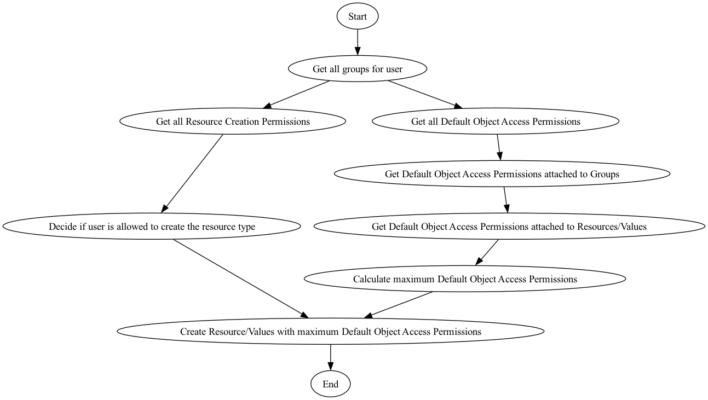
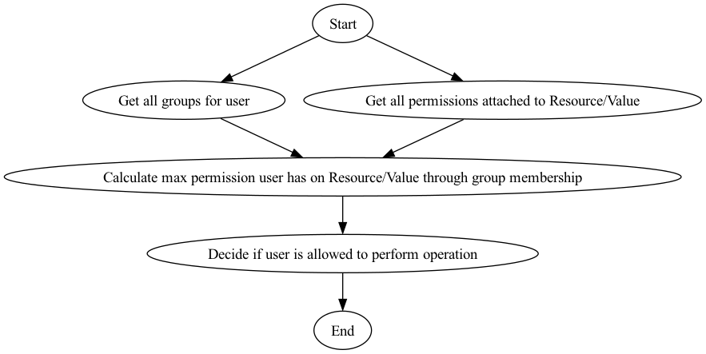
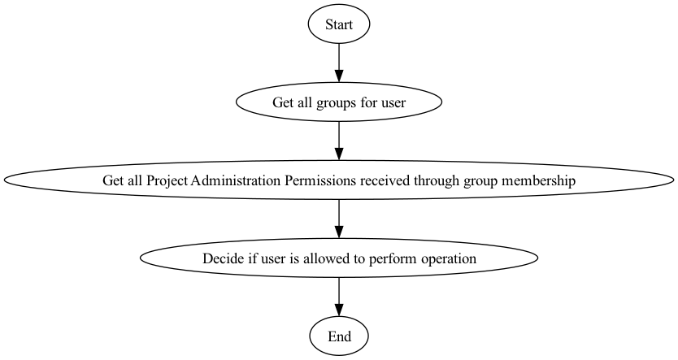
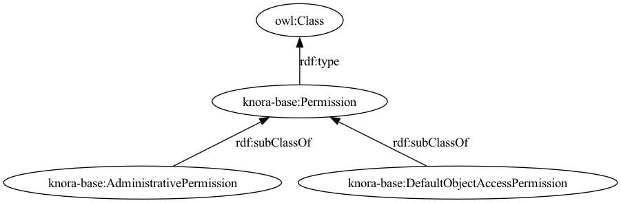
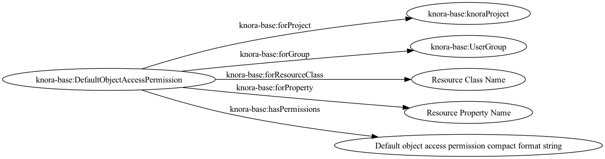

Administration
Permissions
The permissions API endpoint is described here.
The default permissions when a project is created are described here.
DSP’s concept of access control is that permissions can only be granted to groups and not to individual users. There are two distinct ways of granting permission.
- An object (a resource or value) can grant permissions to groups of users.
- Permissions can be granted directly to a group of users (not bound to a specific object).
There are six built-in groups: UnknownUser, KnownUser, Creator, ProjectMember, ProjectAdmin, and SystemAdmin. These groups can be used in the same way as normal user created groups for permission management, i.e. can be used to give certain groups of users, certain permissions, without the need to explicitly create them.
A user becomes implicitly a member of such a group by satisfying certain conditions:
-
knora-admin:UnknownUser:
Any user who has not logged into the DSP is automatically assigned to this group.
Group IRI:http://www.knora.org/ontology/knora-admin#UnknownUser -
knora-admin:KnownUser:
Any user who has logged into the DSP is automatically assigned to this group.
Group IRI:http://www.knora.org/ontology/knora-admin#KnownUser -
knora-admin:Creator:
When checking a user’s permissions on an object, the user is automatically assigned to this group if they are the creator of the object.
Group IRI:http://www.knora.org/ontology/knora-admin#Creator -
knora-admin:ProjectMember:
When checking a user’s permissions, the user is automatically assigned to this group by being a member of a project designated by theknora-admin:isInProjectproperty.
Group IRI:http://www.knora.org/ontology/knora-admin#ProjectMember -
knora-admin:ProjectAdmin:
When checking a user's permission, the user is automatically assigned to this group through theknora-admin:isInProjectAdminGroupproperty, which points to the project in question.
Group IRI:http://www.knora.org/ontology/knora-admin#ProjectAdmin -
knora-admin:SystemAdmin:
Membership is received by setting the propertyknora-admin:isInSystemAdminGrouptotrueon aknora-admin:User.
Group IRI:http://www.knora.org/ontology/knora-admin#SystemAdmin
There are three kinds of permissions:
- object access permissions, which contain permissions that point from explicit objects (resources/values) to groups.
- administrative permissions, which contain permissions
that are put on instances of
knora-admin:Permissionobjects directly affecting groups. - default object access permissions which are also put on instances of
knora-admin:Permission, and which also directly affect groups.
Object Access Permissions
An object (resource / value) can grant the following permissions, which
are stored in a compact format in a single string, which is the object
of the predicate knora-base:hasPermissions:
- Restricted view permission (RV): Allows a restricted view of the object, e.g. a view of an image with a watermark.
- View permission (V): Allows an unrestricted view of the object. Having view permission on a resource only affects the user’s ability to view information about the resource other than its values. To view a value, she must have view permission on the value itself.
- Modify permission (M): For values, this permission allows a new version of a value to be created. For resources, this allows the user to create a new value (as opposed to a new version of an existing value), or to change information about the resource other than its values. When he wants to make a new version of a value, his permissions on the containing resource are not relevant. However, when he wants to change the target of a link, the old link must be deleted and a new one created, so he needs modify permission on the resource.
- Delete permission (D): Allows the item to be marked as deleted.
- Change rights permission (CR): Allows the permissions granted by the object to be changed.
Each permission in the above list implies all lower-numbered permissions.
A user’s permission level on a particular object is calculated in the following way:
- Make a list of the groups that the user belongs to, including Creator and/or ProjectMember and/or ProjectAdmin if applicable.
- Make a list of the permissions that she can obtain on the object, by iterating over the permissions that the object grants. For each permission, if she is in the specified group, add the specified permission to the list of permissions she can obtain.
- From the resulting list, select the highest-level permission.
- If the result is that she would have no permissions, give her whatever permission UnknownUser would have.
The format of the object of knora-base:hasPermissions is as
follows:
- Each permission is represented by the one-letter or two-letter abbreviation given above.
- Each permission abbreviation is followed by a space, then a comma-separated list of groups that the permission is granted to.
- The IRIs of built-in groups are shortened using the knora-admin prefix.
- Multiple permissions are separated by a vertical bar (|).
For example, if an object grants view permission to unknown and known users, and modify permission to project members, the resulting permission literal would be: :
V knora-admin:UnknownUser,knora-admin:KnownUser|M knora-admin:ProjectMember
Administrative Permissions
The following permissions can be set via instances of
knora-admin:AdministrativePermission on any group belonging to a
project. For users that are members of a number of groups with
administrative permissions attached, the final set of permissions is
additive and most permissive. The administrative permissions are stored
in a compact format in a single string, which is the object of the
predicate knora-base:hasPermissions attached to an instance of the
knora-admin:AdministrativePermission class. The following permission
values can be used:
-
Resource / Value Creation Permissions:
1) ProjectResourceCreateAllPermission:
- description: gives the permission to create resources inside the project.
- usage: used as a value for knora-base:hasPermissions.
2) ProjectResourceCreateRestrictedPermission:
- description: gives restricted resource creation permission inside the project.
- usage: used as a value for knora-base:hasPermissions.
- value:
RestrictedProjectResourceCreatePermissionfollowed by a comma-separated list of ResourceClasses the user should only be able to create instances of.
-
Project Administration Permissions:
1) ProjectAdminAllPermission:
- description: gives the user the permission to do anything on project level, i.e. create new groups, modify all existing groups (group info, group membership, resource creation permissions, project administration permissions, and default permissions).
- usage: used as a value for knora-base:hasPermissions.
2) ProjectAdminGroupAllPermission:
- description: gives the user the permission to modify group info and group membership on all groups belonging to the project.
- usage: used as a value for the knora-base:hasPermissions property.
3) ProjectAdminGroupRestrictedPermission:
- description: gives the user the permission to modify group info and group membership on certain groups belonging to the project.
- usage: used as a value for knora-base:hasPermissions
- value:
ProjectGroupAdminRestrictedPermissionfollowed by a comma-separated list ofknora-admin:UserGroup.
4) ProjectAdminRightsAllPermission:
- description: gives the user the permission to change the permissions on all objects belonging to the project (e.g., default permissions attached to groups and permissions on objects).
- usage: used as a value for the knora-base:hasPermissions property.
-
Ontology Administration Permissions:
1) ProjectAdminOntologyAllPermission:
- description: gives the user the permission to administrate the project ontologies
- usage: used as a value for the knora-base:hasPermissions property.
The administrative permissions are stored in a compact format in a
single string, which is the object of the predicate
knora-base:hasPermissions attached to an instance of the
knora-admin:AdministrativePermission class.
-
The format of the object of
knora-base:hasPermissionsis as follows:- Each permission is represented by the name given above.
- Each permission is followed by a space, then if applicable, by a comma separated list of IRIs, as defined above.
- The IRIs of built-in values (e.g., built-in groups, resource
classes, etc.) are shortened using the knora-admin prefix
knora-admin:. - Multiple permissions are separated by a vertical bar (|).
For example, if an administrative permission grants the
knora-admin:ProjectMember group the permission to create all resources
(ProjectResourceCreateAllPermission), the resulting administrative
permission object with the compact form literal would be: :
<http://rdfh.ch/permissions/001
rdf:type knora-admin:AdministrativePermission ;
knora-admin:forProject <http://rdfh.ch/projects/00FF>;
knora-admin:forGroup knora-admin:ProjectMember ;
knora-base:hasPermissions "ProjectResourceCreateAllPermission"^^xsd:string .
Default Object Access Permissions
Default Object Access Permissions are used when new objects (resources and/or values) are created. They represent object access permissions with which the new object will be initially outfitted. As with administrative permissions, these default object access permissions can be defined for any number of groups. Additionally, they can be also defined for resource classes and properties.
The following default object access permissions can be attached to groups, resource classes and/or properties via instances of knora-admin:DefaultObjectAccessPermission (described further bellow). The default object access permissions correspond to the earlier described object access permission:
-
Default Restricted View Permission (RV):
- description: any object, created by a user inside a group holding this permission, is restricted to carry this permission
- value:
RVfollowed by a comma-separated list ofknora-admin:UserGroup
-
Default View Permission (V):
- description: any object, created by a user inside a group holding this permission, is restricted to carry this permission
- value:
Vfollowed by a comma-separated list ofknora-admin:UserGroup
-
Default Modify Permission (M) accompanied by a list of groups.
- description: any object, created by a user inside a group holding this permission, is restricted to carry this permission
- value:
Mfollowed by a comma-separated list ofknora-admin:UserGroup
-
Default Delete Permission (D) accompanied by a list of groups.
- description: any object, created by a user inside a group holding this permission, is restricted to carry this permission
- value:
Dfollowed by a comma-separated list ofknora-admin:UserGroup
-
Default Change Rights Permission (CR) accompanied by a list of groups.
- description: any object, created by a user inside a group holding this permission, is restricted to carry this permission
- value:
CRfollowed by a comma-separated list ofknora-admin:UserGroup
A single instance of knora-admin:DefaultObjectAccessPermission must
always reference a project, but can only reference either a group
(knora-admin:forGroup property), a resource class
(knora-admin:forResourceClass), a property (knora-admin:forProperty),
or a combination of resource class and property.
Example default object access permission instance:
<http://rdfh.ch/permissions/002
rdf:type knora-admin:DefaultObjectAccessPermission ;
knora-admin:forProject <http://rdfh.ch/projects/00FF>;
knora-admin:forGroup knora-admin:ProjectMember ;
knora-base:hasPermissions "CR knora-admin:Creator|M knora-admin:ProjectMember|V knora-admin:KnownUser"^^xsd:string .
This instance is setting default object access permissions to the project member group of a project, giving change right permission to the creator, modify permission to all project members, and view permission to known users. Further, this implicitly applies to all resource classes and all their properties inside the project.
Permission Precedence Rules
For both administrative permissions and default object access permissions, the resulting permissions are derived by applying precedence rules, for the case that the user is member of more than one group.
The following list is sorted by the permission precedence level in descending order:
- permissions on
knora-admin:ProjectAdmin(highest level) - permissions on resource classes and property combination (own project)
- permissions on resource classes and property combination
(
knora-admin:SystemProject) - permissions on resource classes / properties (own project)
- permissions on resource classes / properties
(
knora-admin:SystemProject) - permissions on custom groups
- permissions on
knora-admin:ProjectMember - permissions on
knora-admin:KnownUser(lowest level)
The permissions on resource classes / properties are only relevant for default object access permissions.
Administrative Permissions: When a user performs an operation requiring administrative permissions, then only the permissions from the highest level are taken into account. If a user is a member of more than one group on the same level (only possible for custom groups) then the defined permissions are summed up and all are taken into account.
Default Object Access Permissions: When a user creates a resource or value, then only the default object permissions from the highest level are applied. If a user is a member of more than one group on the same level (only possible for custom groups) then the defined permissions are summed up and the most permissive are applied.
In the case of the user belonging to the SystemAdmin group, but which
is not member of a project and thus not member of any group belonging
to the project, the default object access permissions from the
ProjectAdmin, ProjectMember, or KnownUser group will be
applied in the order of precedence. If no permissions are defined on
either of these groups, then the resulting permission will be CR knora-admin:Creator.
Implicit Permissions
The knora-admin:SystemAdmin group receives implicitly the following
permissions:
- receives implicitly ProjectAdminAllPermission for all projects.
- receives implicitly ProjectResourceCreateAllPermission for all projects.
- receives implicitly CR on all objects from all projects.
Theses permissions are baked into the system, and cannot be changed.
Default Permissions Matrix for new Projects
The access control matrix defines what are the default operations a subject (i.e. User), being a member of a built-in group (represented by row headers), is permitted to perform on an object (represented by column headers). The different operation abbreviations used are defined as follows:
-
C: Create - the subject inside the group is allowed to create the object.
-
U: Update - the subject inside the group is allowed to update the object.
-
R: Read - the subject inside the group is allowed to read all information about the object.
-
D: Delete - the subject inside the group is allowed to delete the object.
-
P: Permission - the subject inside the group is allowed to change the permissions on the object.
-
-: none - none or not applicable
| Built-In Group | Project | Group | User | Resource | Value |
|---|---|---|---|---|---|
| SystemAdmin | CRUD |
CRUDP |
CRUDP all |
CRUDP all |
CRUDP all |
| ProjectAdmin | -RUD |
CRUDP |
CRUDP +/- project |
CRUDP (in project) |
CRUDP (in project) |
| ProjectMember | ---- |
----- |
----- |
CRU-- (in project) |
----- (in project) |
| Creator | ---- |
----- |
----- |
----- (his resource) |
----- (his value) |
| KnownUser | C--- |
C---- |
CRUD- himself |
----- (in project) |
----- (in project) |
Default Permissions Matrix for new Projects
The explicitly defined default permissions for a new project are as follows:
knora-admin:ProjectAdmingroup:- Administrative Permissions:
- ProjectResourceCreateAllPermission.
- ProjectAdminAllPermission.
-
Default Object Access Permissions:
- CR for the knora-admin:ProjectAdmin group
- D for the knora-admin:ProjectAdmin group
- M for the knora-admin:ProjectAdmin group
- V for the knora-admin:ProjectAdmin group
- RV for the knora-admin:ProjectAdmin group
-
The
knora-admin:ProjectMembergroup: - Administrative Permissions:
- ProjectResourceCreateAllPermission.
- Default Object Access Permissions:
- M for the knora-admin:ProjectMember group
- V for the knora-admin:ProjectMember group
- RV for the knora-admin:ProjectMember group
Basic Workflows involving Permissions
Creating a new Resource

Accessing a Resource/Value

Project / Group Administration

Implementation
The requirements for defining default permissions imposed by all the different use cases are very broad. Potentially, we need to be able to define default permissions per project, per group, per resource class, per resource property, and all their possible combinations.
For this reason, we introduce the knora-admin:Permission class with two sub-classes, namely knora-admin:AdministrativePermission and knora-admin:DefaultObjectAccessPermission, which instances will carry all the necessary information.
Permission Class Hierarchy and Structure
The following graphs show the class hierarchy and the structure of each permission class.
Permission Class Hierarchy

Administrative Permission Structure:
and the same as RDF:
<http://rdfh.ch/permissions/[UUID]> rdf:type knora-admin:AdministrativePermission ;
knora-admin:forProject <http://rdfh.ch/projects/[shortcode]> ;
knora-admin:forGroup <http://rdfh.ch/groups/[shortcode]/[UUID]> ;
knora-base:hasPermissions "ProjectResourceCreateAllPermission|
ProjectResourceCreateRestrictedPermission "<Resource Class IRI>"|
ProjectAdminAllPermission|
ProjectAdminGroupAllPermission|
ProjectAdminGroupRestrictedPermission "<http://rdfh.ch/groups/[shortcode]/[UUID]>, <http://rdfh.ch/groups/[shortcode]/[UUID]>"|
ProjectAdminRightsAllPermission|
ProjectAdminOntologyAllPermission"^^xsd:string .
Default Object Access Permission Structure:

and the same as RDF:
<http://rdfh.ch/permissions/[UUID]> rdf:type knora-admin:DefaultObjectAccessPermission ;
knora-admin:forProject <http://rdfh.ch/projects/[shortcode]> ;
knora-admin:forGroup <http://rdfh.ch/groups/[shortcode]/[UUID]> ;
knora-admin:forResourceClass "Resource Class Name" ;
knora-admin:forProperty "Resource Property Name" ;
knora-base:hasPermissions "RV <http://rdfh.ch/groups/[shortcode]/[UUID]>|
V <http://rdfh.ch/groups/[shortcode]/[UUID]>|
M <http://rdfh.ch/groups/[shortcode]/[UUID]>|
D <http://rdfh.ch/groups/[shortcode]/[UUID]>|
CR <http://rdfh.ch/groups/[shortcode]/[UUID]>"^^xsd:string .
Querying Permission Instances
The properties forProject and either of forGroup, forResourceClass, and forProperty form together a compound key, allowing finding existing permission instances, that address the same set of Project / Group / ResourceClass / Property combination, thus making it possible to extend or change the attached permissions.
Administrative Permission Instances: For each group inside the project, there can be zero or one instance holding administrative permission information. Querying is straitforward by using the knora-admin:forProject and knora-admin:forGroup properties as the compound key.
Default Object Access Permission Instances: For each group, resource class, or property inside the project, there can be zero or one instances holding default object access permission informations. Querying is straitforward by using the knora-admin:forProject and either knora-admin:forGroup, knora-admin:forResourceClass, or knora-admin:forProperty properties as part of the compound key.
Example Data stored in the permissions graph
Administrative permissions on a 'ProjectAdmin' group:
<http://rdfh.ch/permissions/[UUID]> rdf:type knora-admin:AdministrativePermission ;
knora-admin:forProject <http://rdfh.ch/projects/00FF> ;
knora-admin:forGroup knora-admin:ProjectAdmin ;
knora-base:hasPermissions "ProjectResourceCreateAllPermission|
ProjectAdminAllPermission"^^xsd:string .
Administrative permissions on a 'ProjectMember' group:
<http://rdfh.ch/permissions/[UUID]> rdf:type knora-admin:AdministrativePermission ;
knora-admin:forProject <http://rdfh.ch/projects/00FF> ;
knora-admin:forGroup knora-admin:ProjectMember ;
knora-base:hasPermissions "ProjectResourceCreateAllPermission"^^xsd:string .
Administrative permission restricting project admin permission on a group:
<http://rdfh.ch/permissions/[UUID]> rdf:type knora-admin:Permission ;
knora-admin:forProject <http://rdfh.ch/projects/[shortcode]> ;
knora-admin:forGroup <http://rdfh.ch/groups/[shortcode]/[UUID]> ;
knora-base:hasPermissions "ProjectGroupAdminRestrictedPermission <http://rdfh.ch/groups/[shortcode]/[UUID]>"^^xsd:string .
<http://rdfh.ch/permissions/[UUID]> rdf:type knora-admin:AdministrativePermission ;
knora-admin:forProject <http://rdfh.ch/projects/[shortcode]> ;
knora-admin:forGroup <http://rdfh.ch/groups/[shortcode]/[UUID]> ;
knora-base:hasPermissions "ProjectResourceCreateRestrictedPermission <http://www.knora.org/ontology/00FF/images#Person>"^^xsd:string .
Default object access permission on a 'ProjectMember' group:
<http://rdfh.ch/permissions/[UUID]> rdf:type knora-admin:DefaultObjectAccessPermission ;
knora-admin:forProject <http://rdfh.ch/projects/00FF> ;
knora-admin:forGroup knora-admin:ProjectMember ;
knora-base:hasPermissions "CR knora-admin:Creator|
M <http://rdfh.ch/groups/[shortcode]/[UUID]>|
V knora-admin:KnownUser"^^xsd:string .
Default object access permission on a resource class:
<http://rdfh.ch/permissions/[UUID]> rdf:type knora-admin:DefaultObjectAccessPermission ;
knora-admin:forProject <http://rdfh.ch/projects/[shortcode]> ;
knora-admin:forResourceClass <http://www.knora.org/ontology/00FF/images#person> ;
knora-base:hasPermissions "CR knora-admin:Creator,knora-admin:ProjectMember|
V knora-admin:KnownUser,knora-admin:UnknownUser"^^xsd:string .
Default object access permission on a resource property:
<http://rdfh.ch/permissions/[UUID]> rdf:type knora-admin:DefaultObjectAccessPermission ;
knora-admin:forProject <http://rdfh.ch/projects/[shortcode]> ;
knora-admin:forProperty <http://www.knora.org/ontology/00FF/images#lastname> ;
knora-base:hasPermissions "D knora-admin:ProjectMember,knora-admin:Creator|
V knora-admin:KnownUser,knora-admin:UnknownUser"^^ .
Default object access permission on a resource class and property:
<http://rdfh.ch/permissions/[UUID]> rdf:type knora-admin:DefaultObjectAccessPermission ;
knora-admin:forProject <http://rdfh.ch/projects/[shortcode]> ;
knora-admin:forResourceClass <http://www.knora.org/ontology/00FF/images#person> ;
knora-admin:forProperty <http://www.knora.org/ontology/00FF/images#lastname> ;
knora-base:hasPermissions "CR knora-admin:Creator,knora-admin:ProjectMember|
V knora-admin:KnownUser,knora-admin:UnknownUser"^^xsd:string .
<http://rdfh.ch/permissions/[UUID]> rdf:type knora-admin:DefaultObjectAccessPermission ;
knora-admin:forProject knora-admin:SystemProject ;
knora-admin:forProperty <http://www.knora.org/ontology/knora-admin#hasStillImageFileValue> ;
knora-base:hasPermissions "RV knora-admin:UnknownUser|
V knora-admin:KnownUser|
M knora-admin:ProjectMember,knora-admin:Creator"^^xsd:string .
A the time the user's UserProfile is queried, all permissions for all
projects and groups the user is a member of are also queried. This
information is then stored as an easy accessible object inside the
UserProfile, being readily available wherever needed. As this is a
somewhat expensive operation, built-in caching mechanism at different
levels (e.g., UsersResponder, PermissionsResponder), will be applied.